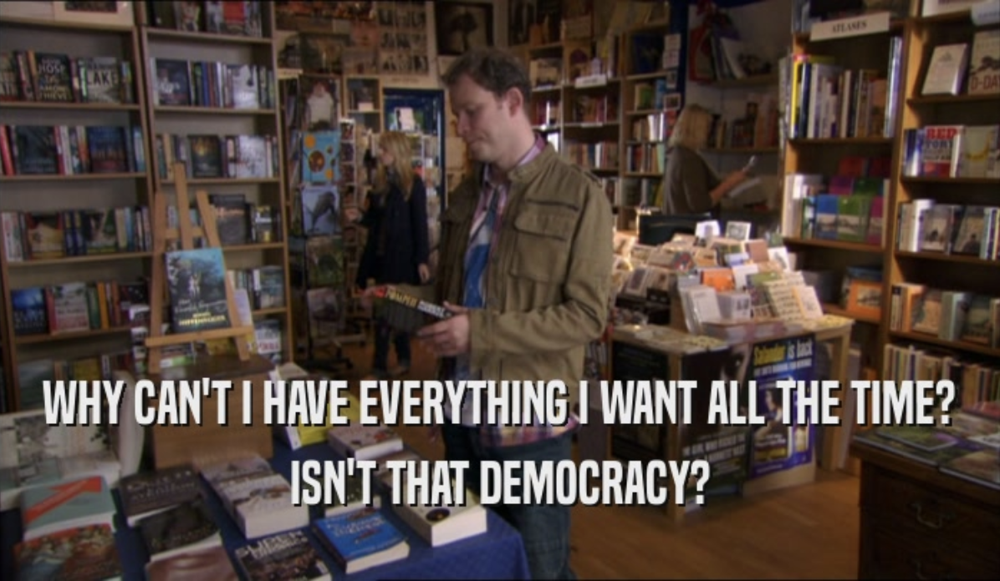
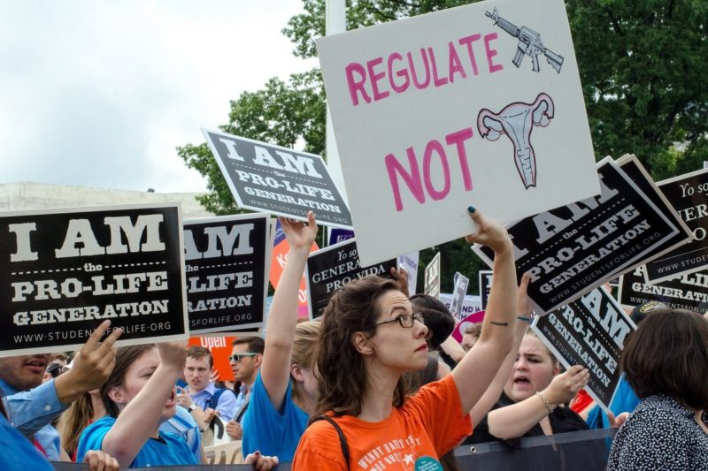
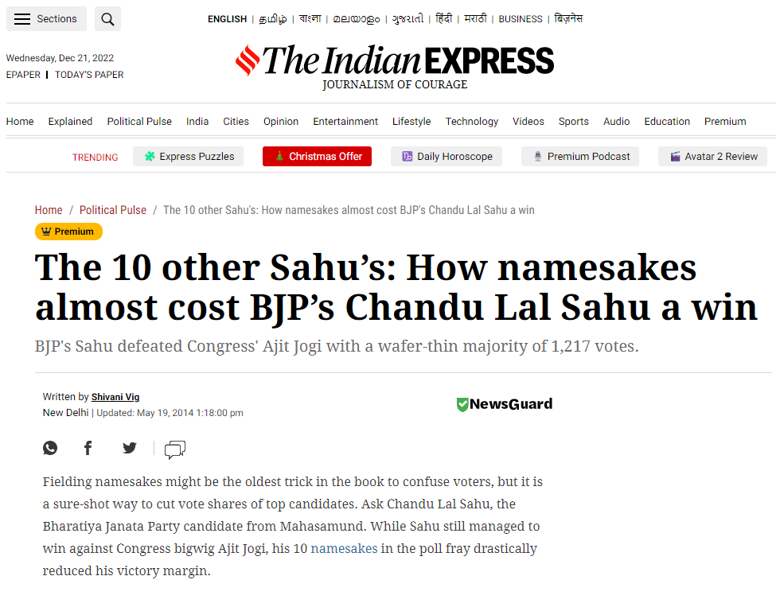

<!DOCTYPE html>
<html lang="en">

<head>
  <meta charset="utf-8" />
  <meta name="viewport" content="width=device-width, initial-scale=1.0, maximum-scale=1.0, user-scalable=no" />

  <title>Collective Decision Making</title>
  <link rel="shortcut icon" href="./../../assets/favicon.ico" />
  <link rel="stylesheet" href="./../../dist/reset.css" />
  <link rel="stylesheet" href="./../../dist/reveal.css" />
  <link rel="stylesheet" href="./../../assets/styles/PBA-theme.css" id="theme" />
  <link rel="stylesheet" href="./../../css/highlight/shades-of-purple.css" />

  <link rel="stylesheet" href="./../.././assets/styles/custom-classes.css" />

</head>

<body class="site">
  <header class="site-header">
    <!-- This logo is a link only on the watching server, not the production build -->
    <a href="">
      
    </a>
  </header>
  <main class="reveal">
    <article class="slides">
      <section  data-markdown><script type="text/template">

# Collective Decision Making
</script></section><section  data-markdown><script type="text/template">
## Lesson highlights

<pba-cols>
<pba-col>
<pba-flex center>

##### Decision<br/>making systems

- Common systems
- Goals and trade-offs

</pba-flex>
</pba-col>
<pba-col>
<pba-flex center>

##### Voting mechanisms

- Common mechanisms
- Desirable criteria

</pba-flex>
</pba-col>
</pba-cols>

<aside class="notes"><ul>
<li>This lesson will be markedly less &quot;exact&quot; than the previous ones in the module.
It will be less math and more critical thinking.</li>
<li>Hence, I encourage class participation.</li>
<li>However, many topics may be contentious and we might not be able to agree, especially not within the lesson time.
The objective of the lesson is to awaken your curiosity on the topic, and I encourage you to continue the discussions outside the classroom.</li>
<li>In the second half of the lesson we&#39;ll talk about voting mechanisms, which are widely used within many decision making systems.</li>
</ul>
</aside></script></section><section  data-markdown><script type="text/template">
## Collective decision making

An umbrella term that contains voting mechanisms,<br/>governance processes, policy making, budget allocation.
</script></section><section  data-markdown><script type="text/template">
## Collective decision making

- A way to gather the opinions of a heterogenous collective.
- A way to aggregate their preferences in a concise way.
- A way to reach a _decision_ over the definition, resources, privilege or authority of a collective.

<aside class="notes"><ul>
<li>In this lesson we will study some of the different ways in which people can make decisions as a unit.</li>
<li>When people think of collective decision making, they usually only think of voting for a representative or representatives, and then letting them make all the decisions.
But it is important to remember that this is just one of many possible mechanisms to reach a decision as a collective.</li>
</ul>
</aside></script></section><section  data-markdown><script type="text/template">
## Why?

- A prerequisite for the formation of countries, companies, dynasties, i.e., _strong institutions_.
- Agile decision making helps collective react to _external_ changes: war, trade, migration.
- _Internally_, they enable stability and progress: money, laws, private property.
</script></section><section  data-markdown><script type="text/template">
## Why?

- Even high tech, highly automated projects remain human collectives at their core.
- A project's decision-making mechanisms ensure its strength and relevance over time.
- We should consider these mechanisms along with the project's economics and security.

<aside class="notes"><ul>
<li>We use the words &quot;collectives&quot; in a very broad sense, to include not only nations and dynasties, but also modern collectives like tech companies, social networks, and online communities.
It is important to remember that these are human collectives, no matter how technical or automated they appear.</li>
<li>Only well designed decision-making mechanisms can ensure that a collective stays strong and relevant over time.
Otherwise, it will disintegrate due to internal discontent or external changes.</li>
<li>Hence, analyzing a project&#39;s decision making mechanisms is just as important as analyzing the soundness of its cryptography, economics and security.</li>
</ul>
</aside></script></section><section  data-markdown><script type="text/template">
## A more profound interpretation

Long you live and high you fly<br/>
Smiles you'll give and tears you'll cry<br/>
**And all you touch and all you see<br/>
Is all your life will ever be**<br/>

-- Pink Floyd (Breathe)

Any single entity may be identified as the aggregate of _its (inter-)actions with its external environment_. If a system's governance wholly defines these, it may properly be considered to identify the entity.
</script></section><section  data-markdown><script type="text/template">
## Common systems

- Dictator, unelected or elected.
- Unelected committee (Zurich guilds).
- Representative democracy -- elected committee.
- Political parties
- Direct democracy -- all participate in all decisions.

<aside class="notes"><ul>
<li>Can you think of other examples?</li>
<li>In the middle ages, the city of Zurich in Switzerland was run by guilds (merchants, farmers, tailors).
Women, and anyone outside these guilds, had no say in the decision-making process.</li>
</ul>
</aside></script></section><section  data-markdown><script type="text/template">
## Goals

<!-- prettier-ignore -->
|                  |                                                                                              |
| :--------------: | :------------------------------------------------------------------------------------------: |
|   **Utility**    | - decision maximizes society's welfare<br/> - it reflects people's preferences |
|  **Legitimacy**  |            - decision is considered fair<br/>- people trust the process            |
| **Practicality** |                      - process is fast<br/> - it is simple to understand                      |
|                  |                                                                                              |

<aside class="notes"><ul>
<li>The three key goals of any decision making process are utility, legitimacy and practicality.</li>
<li>While <em>utility</em> is about the objective quality of the final result, <em>legitimacy</em> is about the perceived quality of the process.
A mechanism is considered legitimate if most people trust the process, agree with it and feel empowered by it, even if they may not personally like the outcome.</li>
<li>For instance, if Fifa had decided unilaterally that Argentina wins the world cup, this decision making mechanism would have the same utility but not the same legitimacy as playing the games: everyone would be angry at it.</li>
<li>Finally, the <em>practicality</em> goal plays an important role especially if we have a very large population, or a short time window to make a decision, e.g., in an emergency.</li>
</ul>
</aside></script></section><section  data-markdown><script type="text/template">
## Goals

<pba-flex center>

- A dictator is practical.
  Is it legitimate?
- Direct democracy is legitimate.
  Why not always use this?
- Which mechanism maximizes utility?
- Which is best in case of war?

</pba-flex>

<aside class="notes"><ul>
<li>This is the type of questions we are gonna explore in this lesson.</li>
<li>Direct democracy is considered legitimate but is unfortunately slow.
If would not be the right mechanism for an emergency, such as war.</li>
<li>In the next slides, we look more closely at some of the most common systems.</li>
</ul>
</aside></script></section><section  data-markdown><script type="text/template">
## Dictator

<pba-flex center>

- Legitimate?
- It is _very_ practical.
- Good in case of an emergency.
- Only stable as long as the individual is stable (unlikely to be forever!).

</pba-flex>

<aside class="notes"><ul>
<li>What&#39;s wrong with a dictator?
We typically think of it as illegitimate, but keep in mind that kings used to be considered legitimate in the past.
And even today, the owner of a large tech company may be able to make unilateral decisions that impact millions of lives, and we consider this to be legitimate.</li>
<li>It is practical and allows for fast decision making in case of an emergency.
For example, in the next pandemic, would you like to have every city vote on whether and when face masks should be mandatory in public spaces?
Or would you prefer to have an authority impose it?</li>
<li>You could also argue that it leads to stability, as people can expect things to stay the way they are for the foreseeable future, and can plan accordingly.
However, we also have several real-life examples where a dictator behaves erratically.</li>
</ul>
</aside></script></section><section  data-markdown><script type="text/template">
## Democracy



<aside class="notes"><ul>
<li>Lots of different things to lots of different people.</li>
<li>Democracy doesn&#39;t really exist, only systems which are democratic to a some degree.</li>
</ul>
</aside></script></section><section  data-markdown><script type="text/template">
## Simple Direct Democracy

<pba-flex center>

- Every person is consulted on every decision.
- Considered highly legitimate.
- Good at revealing the collective's opinions.
- Leads to progress as anyone can propose ideas.

</pba-flex>

<aside class="notes"><ul>
<li>Direct democracy represents an extreme where every person is consulted on every decision, for instance via referendums.</li>
<li>It is great at revealing the people&#39;s opinions, and adapting at evolving opinions.</li>
<li>Similarly, if we assume that anyone is free to raise a proposal in direct democracy, then there is a sort of &quot;free market of ideas&quot;.
This leads to quick progress, because innovative ideas that challenge the status quo are not silenced.</li>
</ul>
</aside></script></section><section  data-markdown><script type="text/template">
## Simple Direct democracy



Compare to a two-party system

<aside class="notes"><ul>
<li>For instance, imagine a two-party system like the US where people are forced to pick one of two parties, instead of directly casting their vote on every decision.
Imagine the left party traditionally supports legalizing abortion and banning firearms, while the right party traditionally supports banning abortion and legalizing firearms.
Such idiosyncrasy could have made sense in the past, but if there is a shift in preferences whereby more and more people want to legalize both abortions and guns, the system will not have the means to detect these preferences and adapt properly.</li>
<li>Similarly, if neither the left party nor the right party supports universal healthcare, then people who support healthcare do not have a voice.</li>
<li>Of course, similar issues remain for a multi-party system (more than two political parties), and the issues are even worse in a dictatorship.</li>
</ul>
</aside></script></section><section  data-markdown><script type="text/template">
## Simple Direct democracy

<pba-flex center>

- Not very practical:<br/>asking everyone to vote.
- One decision at a time.
- Not great for emergencies.

</pba-flex>

<aside class="notes"><ul>
<li>On the down side, direct democracy is unfortunately not very practical for two reasons.
First, because asking every person to vote very slow.
In particular, having a referendum would probably not be wise in an emergency such as war, or a detected vulnerability in a computer network.</li>
</ul>
</aside></script></section><section  data-markdown><script type="text/template">
## Voting paradox

Does direct democracy maximize **utility**?
_Probably not._

Example:
_Option A_: 0 dollars
_Option B_: 100 dollars

Prob. that _my vote_ flips the result from A to B: <0.1%.

So, my expected profit for voting is <10 cents.

<aside class="notes"><ul>
<li>We saw that direct democracy is legitimate but not practical.
How does it fare in terms of utility?
Relatively well, but we argue here that it is not ideal, due to something called the voting paradox.</li>
<li>Suppose the collective must decide between options A and B, and I personally value option A as worth zero and option B as worth $100 to me.</li>
<li>Now, if most people vote for A, then A wins even if I vote for B, and if most people vote for B, then B wins even if I don&#39;t vote at all.
Hence the most likely event is that my vote does not change the outcome.</li>
<li>When the number of voters is in the millions, the likelihood that my vote actually changes the outcome is tiny, well below $0.1%$.
My <em>expected profit</em> for voting is then
(my profit for B - myr profit for A)$\times$prob.
that my vote flips the result.</li>
<li>In this example, my expected profit is less than 10 cents, which probably does not justify the effort of voting.</li>
</ul>
</aside></script></section><section  data-markdown><script type="text/template">
## Voting paradox

**Voting paradox:** For a rational, self-interested voter, voting costs will normally exceed the expected benefits.

Minimal chance that single vote changes collective decision, so most of the time the individual voting benefit is zero.

A _common good_ game: globally optimal if everyone votes, but personally optimal not to vote.

<aside class="notes"><ul>
<li>Voting paradox is a known concept in voting theory: if voters are rational and self interested, they should not vote.
The fact that many people vote means that they are either not rational, or not self interested.</li>
</ul>
</aside></script></section><section  data-markdown><script type="text/template">
## Voting paradox

**Voting paradox:** For a rational, self-interested voter, voting costs will normally exceed the expected benefits.

It leads to a low _turnout_, which affects legitimacy.

**Turnout:** percentage of people who choose to vote.

<aside class="notes"><ul>
<li>Indeed, we see for instance that in Switzerland, where direct democracy is used, the turnout is typically around 30%, and it&#39;s even lower in other systems.</li>
<li>Only a basic interpretation. Better technology and progressive voting systems (OpenGov!) can mitigate this issue.</li>
</ul>
</aside></script></section><section  data-markdown><script type="text/template">
## Rational ignorance

**Rational ignorance:** refraining from learning
when the cost of educating oneself on an issue
exceeds the expected potential benefit.

As a result, most people will not vote _judiciously_.

<aside class="notes"><ul>
<li>A notion related to the voting paradox is that of rational ignorance: when the expected benefit we obtain from voting is minimal, we might not vote judiciously, even when we vote.</li>
<li>We have limited time and limited capacity to learn things, so we will give preference to acquiring the knowledge that personally brings us the most expected potential benefit.</li>
<li>In the previous example, if our expected benefit for voting at most 10 cents, and it takes us two hours to understand what the best option is, it may be wiser to vote at random even if we vote, and use that time to learn to code, or learn to play guitar, etc.</li>
</ul>
</aside></script></section><section  data-markdown><script type="text/template">
## Rational ignorance

Whether or not someone votes can be biasable.

_40% of the population supports a new proposal,
while 60% rejects it.
However, a company
who will profit from the decision lobbies for the 'aye'.
50% of supporters and 30% of detractors vote.
As a result, the proposal passes._

<aside class="notes"><ul>
<li>Another consequence of rational ignorance is that someone&#39;s vote can be biasable.
If you don&#39;t have a strong opinion about a vote because you haven&#39;t spent the time to learn about the issue deeply, you&#39;re more likely to be easily influenceable.</li>
</ul>
</aside></script></section><section  data-markdown><script type="text/template">
## Solutions to the voting paradox

- **Representative democracy**: elect a committee,
  whose members represent well
  the preferences of the _passive people_.

- **Delegated voting**: give your voting power
  to a person who understands the issue well,
  so you don't have to.

<aside class="notes"><ul>
<li>We saw that a critique of direct democracy is that it&#39;s unrealistic to expect everyone in the population to invest their time to understand every issue, and then vote.</li>
<li>This leads to low turnout, which raises the question of legitimacy if a majority of the population does not voice their opinion.</li>
</ul>
</aside></script></section><section  data-markdown><script type="text/template">
## Advanced Forms of Democracy

<pba-flex center>

- Liquid democracy/delegation
- OpenGov/multi-track delegation
- Quadratic "replacement" voting
- OpenGov/Optimistic approval
- ...

</pba-flex>
</script></section><section  data-markdown><script type="text/template">
## Solutions to the voting paradox

- Both solutions based on desire of
  representing every _clique_ in the collective.
- Delegated voting is organic, helps with turnout,
  but remains slow.
- A committee ignores preferences of small cliques,
  but can take complex decisions fast.

<aside class="notes"><ul>
<li>However, people naturally tend to congregate with other people with similar preferences, to form what we call cliques.
So, you tend to be well represented by voters in your clique.
The idea of both systems is to &quot;sample&quot; some opinions for every clique.</li>
<li>From my point of view, delegated voting remains very close in spirit to direct democracy, as every individual remains free to vote directly if they choose to do so, or they can choose a representative that represents them very well.
We gain in terms of practicality as now fewer people need to vote, but the process is still slow and can only take binary decisions.</li>
<li>On the other hand, a committee is a bit closer to a dictator.
It does a good job at representing the most common preferences of the collective, but not the preferences of small cliques.
On the other hand, it can make subtle, non-binary decisions, and can make them fast.</li>
<li>Hence, it could be a good idea to use delegated voting for important, binary decisions (such as whether to make abortions legal), and an elected committee to make emergency decisions (such as what to do in case of war).
I encourage you to consider how you would design an ideal decision making system.</li>
</ul>
</aside></script></section><section  data-markdown><script type="text/template">
## System capture

Does a dictatorship maximize utility?
Also **probably not**.

**System capture:** A decision-making system
in which a clique manages to impose
its opinion consistently.

Their special interest is prioritized
over the interest of the collective,
leading to a decrease of general welfare.

<aside class="notes"><ul>
<li>Before we argued that pure direct democracy might not maximize utility.
Now we also argue that a pure dictatorship is also not ideal for utility.</li>
</ul>
</aside></script></section><section  data-markdown><script type="text/template">
## System capture

_Example:_ in a movie club,
40% of people like comedy,
30% like drama, 30% like action.

Should they watch a comedy every time?

What if it was 60%, 20%, 20%?

<aside class="notes"><ul>
<li>Imagine that a group of friends meet every week to watch a movie, and 40% of members always pick comedy while 30% pick dramas and 30% pick action movies.</li>
<li>Would it be fair if a comedy is chosen every time?
Or what would decision-making system would you choose?</li>
<li>What if the percentages were 60%, 20%, 20%?
Is it now fair to always pick a comedy, since it makes a majority of people happy?</li>
</ul>
</aside></script></section><section  data-markdown><script type="text/template">
## System capture

<pba-flex center>

- A dictatorship system is captured by definition.
- A majority vote can lead to capture<br/>if the minority's opinion is consistently ignored.<br/>
  Known as "tyranny of the majority".
- It can affect legitimacy.

</pba-flex>

<aside class="notes"><ul>
<li>Although a dictatorship is obviously a captured system, other systems also have varying degrees of risk of being captured.</li>
<li>For instance, as we saw with the movie club example, a majority vote can also lead to capture.</li>
<li>In turn, this can not only negatively affect the utility goal but also the legitimacy goal, if a group of people feel that their voice is always ignored.</li>
</ul>
</aside></script></section><section  data-markdown><script type="text/template">
## Random dictator

Whenever there is a decision to be made,<br/>pick a person at random in the collective<br/>and let them decide as a dictator.

<aside class="notes"><ul>
<li>As a curious note, we mention a system called random dictator.</li>
<li>It works quite well in the example of the movie club: every week, pick a person at random and let them select the movie to watch.</li>
<li>On the other hand, it would be a bad idea for a country to let a random dictator decide on the tax policy every month.
This is because in the case stability is more important than avoiding a tyranny of the majority.</li>
</ul>
</aside></script></section><section  data-markdown><script type="text/template">
## Random dictator

<pba-flex center>

- _Very_ efficient.
- _Very_ capture resistant (on average).
- Terrible for stability.
- Where is it used?

<aside class="notes"><ul>
<li>A random dictator system is captured in the short term, but it is highly resistant to capture in the long term.
This is because every clique, even very small ones, will have their voice heard with a frequency proportional to the clique size.</li>
<li>In fact, a version of random dictator is used in most blockchain consensus protocol, both based in proof-of-work and proof-of-stake.
We do this for efficiency, and because stability of block production is not a priority, while the highest priority is to resist capture by an adversarial minority.</li>
<li>This is because, if most block producers act honestly, then it is a Nash equilibrium to also act honestly when it is your turn to produce a block.
But if a minority manages to capture the system for some amount of time, and arbitrarily decide on the content of a majority of blocks produced during this time, then the minority has an incentive to attack the network for personal gain.</li>
</ul>
</aside></script></section><section  data-markdown><script type="text/template">
## Capture resistance vs. stability

<pba-flex center>

- A dictatorship is _fully captured_ but also stable.
- Direct democracy is at _risk of capture_, and still stable.
- A random dictatorship is _most resistant to capture_, but unstable.

</pba-flex>

<aside class="notes"><ul>
<li>In this chart we consider the size of a clique or constituent, and plot it against the influence it will have over the collective decision in expectation.</li>
<li>For instance, if there is an unelected dictator then no clique, big or small, has any influence on decisions.</li>
<li>In a two-party system, only fairly large constituents will have a voice, while small constituents will have no voice.</li>
<li>If we elect a larger committee then smaller constituents are more likely to be represented and hence have an influence on the final decision.</li>
<li>Finally, in a random dictator system we have that every constituent, no matter how small, has a chance of influencing the final decision in proportion to the constituent size.</li>
<li>In general, we see that there is a trade-off between being resistant to capture and being stable.</li>
</ul>
</aside></script></section><section  data-markdown><script type="text/template">
## Recap

- Goals: utility, legitimacy and practicality.
- In emergencies, practicality may be more relevant.
- Simple direct democracy is legitimate, not so practical.
- Dictatorship is practical, not legitimate.
- Probably neither extreme maximizes utility.
- With new technology, we have better tools & mechanisms to make direct democracy effective
</script></section><section  data-markdown><script type="text/template">
## Voting mechanisms

- Widely used within decision-making systems.
- _Candidates_ to choose from: people, policies.
- _Voters_ who declare preferences through _ballots_.
- A mechanism takes these ballots as input,
  and outputs a single candidate as the _winner_.
- Many _criteria_ to judge the mechanism.

<aside class="notes"><ul>
<li>New topic, wake up!</li>
<li>Voting mechanisms are some of the most popular ways to make collective decisions, and have been for centuries.</li>
<li>Why do you think that is? They are used for the election of leaders, for decision making within a governance body, choosing the winners in contests, among friends to decide on a restaurant, or in a family to name a dog.</li>
<li>Without a doubt, one of the most desirable criteria for a collective decision making mechanism is <em>simplicity</em>, meaning that it should be easy to understand and participate for the population.
This is probably a big pro for voting mechanisms.</li>
<li>In the next slides we will explore some of the most popular voting mechanisms, along with some of the most popular criteria used to compare them.</li>
<li>What criteria do you think are most intuitive and desirable for a mechanism? Fairness? Proportionality? Utility? How would you define these terms precisely?</li>
</ul>
</aside></script></section><section  data-markdown><script type="text/template">
## Voting mechanisms

We will see the following notions:

- _Single-vote mechanisms:_ plurality, two-round.
- _Ranked-vote mechanisms:_ Borda count, ranked-pairs.
- Vote splitting, strategic voting.
- Monotonicity criterion.

<aside class="notes"><ul>
<li>Two main types, depending on how the voters declare their preferences: in single-vote mechanisms, each voter selects one candidate, while in ranked-vote mechanisms, each voter ranks all candidates.</li>
</ul>
</aside></script></section><section  data-markdown><script type="text/template">
## Single-vote mechanisms

Mechanisms where each voter picks _one_ candidate.

- **Plurality voting:** Candidate with most votes wins,
  even if they do not receive an absolute majority of votes.
- **Two-round voting:** Top two candidates are voted on again.
  The candidate with most votes in second round wins.

<aside class="notes"><ul>
<li>These are some of the most popular voting mechanisms.
They are certainly among the simplest ones.</li>
<li>Plurality is also known as &quot;first past the post&quot; in the UK, where it is widely used.</li>
<li>Consider also the generalization - multi-round mechanisms</li>
</ul>
</aside></script></section><section  data-markdown><script type="text/template">
## Single-vote mechanisms

<pba-cols>
<pba-col>

**Plurality:** **8 votes for A,** 5 votes for B, 7 votes for C.

**Two-round:**

- 1st: **8 votes for A,** 5 votes for B, **7 votes for C**.
- 2nd: 8 votes for A, **12 votes for C**.

</pba-col>

<pba-col>

<!-- prettier-ignore -->
|          | 1st | 2nd | 3rd |
| -------- | --- | --- | --- |
| 8 voters | A   | B   | C   |
| 7 voters | C   | B   | A   |
| 5 voters | B   | C   | A   |

</pba-col>
</pba-cols>

<aside class="notes"><ul>
<li>Recall that voters only vote for a single voter per round.
But for convenience in what follows we assume we know the full candidate ranking of each voter, so we can analyze what would happen if any two out of the three candidates go head to head in the second round.</li>
<li>Are they equivalent?
No.
Look at the example above where there are three candidates A, B and C, and 20 voters with three types of preferences.</li>
<li>In plurality voting, we would only get to see the first column, and elect A with 8 votes.</li>
<li>In two-round, candidates A and C would go to second round, where the 5 voters in the last row would change their vote from B to C, and candidate C would win with 12 votes.</li>
<li>In general, several seemingly reasonable mechanisms result in different winners for the same collection of voters&#39; preferences.
This is why we need to look more closely into what properties we want out of a mechanism.</li>
</ul>
</aside></script></section><section  data-markdown><script type="text/template">
## Vote splitting



<aside class="notes"><ul>
<li>Which of these mechanisms is better?
Here is an argument against plurality voting.</li>
<li>In 2014, Candidate Chandu Sahu, from a political party called BJP in India, was a favorite to win in an election against opponent Ajit Jogi.
To his surprise, on the day of the elections there were 10 other independent candidates registered with the same exact name.
Apparently most of these candidates had no history in politics, but someone found them and offered them money to run on the elections.
Of course, the obvious suspect is the opponent, but it was never proven.
Luckily, the original Chandu Sahu still managed to win, but by only a razor-thin margin of 1200 votes, as the other 10 fake candidates accumulated around 70 thousand votes.</li>
<li>This technique is known as vote splitting, and plurality voting is well known to be susceptible to it.</li>
</ul>
<p>Image source: <a href="https://indianexpress.com/article/political-pulse/the-10-other-sahus-how-namesakes-almost-cost-bjps-chandu-lal-sahu-a-win/">https://indianexpress.com/article/political-pulse/the-10-other-sahus-how-namesakes-almost-cost-bjps-chandu-lal-sahu-a-win/</a></p>
</aside></script></section><section  data-markdown><script type="text/template">
## Vote splitting

<pba-cols>
<pba-col>

- Imagine B and C are similar candidates,
  and most people prefer either over A.
- Known issue in plurality.
  Two-round helps alleviate it.

</pba-col>
<pba-col>

<!-- prettier-ignore -->
|          | 1st | 2nd | 3rd |
| -------- | --- | --- | --- |
| 8 voters | A   | B   | C   |
| 7 voters | C   | B   | A   |
| 5 voters | B   | C   | A   |

</pba-col>
</pba-cols>

<aside class="notes"><ul>
<li>Imagine that candidates B and C are very similar, i.e., they have similar points of view (or a similar name!) In the example, we see that a majority of the population prefers either of them to A, but since their votes are split, both candidates would lose out to A in plurality voting.</li>
<li>This issue is known as <em>vote splitting</em>.
Two-round voting helps reduces its effect.</li>
<li>In electoral systems that implement plurality voting, vote splitting is sometimes used as a weapon by the less popular party (in our example, A), who strategically nominates a candidate similar to their rival to split their votes.</li>
<li>In turn, a common defense against vote splitting is to form alliances among similar candidates.</li>
</ul>
</aside></script></section><section  data-markdown><script type="text/template">
## Monotonicity criterion

- A voter raising their rank for the winning candidate,
  or lowering their rank for a losing candidate,
  should not change the winner.
- Plurality is monotonic, _two-round voting is not_.

<aside class="notes"><ul>
<li>Conversely, here is an argument against two-round voting.</li>
<li>Monotonicity is one of the most intuitive criteria that we would expect from a voting rule.
It says that the winning candidate should be stable relative to monotonic changes of the voter&#39;s preferences.
In particular, if a voter raises their preference for the current winner, or lowers their preference for other candidates, then the winner should not change.</li>
<li>Failure of this criterion means that the mechanism is susceptible to strategic voting, because a rational voter may be better off hiding their real preferences.</li>
</ul>
</aside></script></section><section  data-markdown><script type="text/template">
## Monotonicity Criterion

<pba-cols>
<pba-col>

**Two-round:**

- 1st: **8 votes for A**, 6 votes for B, **7 votes for C**.
- 2nd: **11 votes for A**, 10 votes for C.

</pba-col>
<pba-col>

<!-- prettier-ignore -->
|          | 1st | 2nd | 3rd |
| -------- | --- | --- | --- |
| 6 voters | A   | B   | C   |
| 2 voters | A   | C   | B   |
| 3 voters | B   | A   | C   |
| 3 voters | B   | C   | A   |
| 5 voters | C   | B   | A   |
| 2 voters | C   | A   | B   |

</pba-col>
</pba-cols>

<aside class="notes"><ul>
<li>We will see now that two-round voting is not monotonic.</li>
<li>In this example, there are 21 voters, with 6 types of preferences.</li>
<li>In two-round voting, A and C go to the second round, where A wins 11 against 10.</li>
</ul>
</aside></script></section><section  data-markdown><script type="text/template">
## Monotonicity Criterion

<pba-cols>
<pba-col>

Bottom-row voters _raise their preference for A_.

**Two-round:**

- 1st: **10 votes for A**, **6 votes for B**, 5 votes for C.
- 2nd: 10 votes for A, **11 votes for B**.

</pba-col>
<pba-col>

<!-- prettier-ignore -->
|          | 1st   | 2nd   | 3rd |
| -------- | ----- | ----- | --- |
| 6 voters | A | B | C |
| 2 voters | A | C | B |
| 3 voters | B | A | C |
| 3 voters | B | C | A |
| 5 voters | C | B | A |
| 2 voters | **A** | **C** | B |

</pba-col>
</pba-cols>

<aside class="notes"><ul>
<li><p>But now suppose the 2 voters in the bottom row raise their preference for A.
They simply swap the positions of A and C in their ranking.</p>
</li>
<li><p>Now C doesn&#39;t make it to the second round.
In the second round, now B wins 11 to 10 against A.</p>
</li>
<li><p>Hence, two-round voting is not monotonic.</p>
</li>
<li><p>If the bottom-row voters want candidate A to win, they are better off marking C as their top preference.</p>
</li>
</ul>
</aside></script></section><section  data-markdown><script type="text/template">
## Strategic voting

A mechanism in which a voter
increases the chances of a candidate
by _not voting for them_.

<aside class="notes"><ul>
<li>A mechanism that is not monotone is susceptible to strategic voting.</li>
<li>This is the case with two-round voting.</li>
<li>Indeed, in the previous example, the bottom-row voters want candidate A to win, but are better off marking C as their top preference.</li>
</ul>
</aside></script></section><section  data-markdown><script type="text/template">
## Ranked-vote mechanisms

<pba-cols>
<pba-col>

Mechanisms where each voter ranks _all_ candidates.

- In 1770, Jean-Charles de Borda showed 2-round
  may elect a candidate that would lose out
  head-to-head to _every other candidate_.

</pba-col>
<pba-col>

<!-- prettier-ignore -->
|          | 1st | 2nd | 3rd |
| -------- | --- | --- | --- |
| 8 voters | A | B | C |
| 7 voters | C | B | A |
| 5 voters | B | C | A |

</pba-col>
</pba-cols>

<aside class="notes"><ul>
<li>Are there monotonic mechanisms better than plurality voting?Yes!</li>
<li>But they require more information from the voters: they need to rank all the candidates.</li>
<li>The unfair nature of plurality voting was pointed out in 1770 by French mathematician Jean-Charles de Borda, in a presentation at the French Royal Academy of Sciences.</li>
<li>He proved that plurality voting can elect the least favorite candidate: one that would be defeated by every other candidate in a head-to-head election.</li>
<li>Going back to our first example, recall that A was the winner in plurality voting, yet if A and B go head-to-head, A loses 8 to 12, and if A and C go head-to-head, again A loses 8 to 12.</li>
<li>Finally, if B and C go head-to-head, B would win 15 to 5, so in a sense B is the overall winner of pair-wise elections.</li>
</ul>
</aside></script></section><section  data-markdown><script type="text/template">
## Borda count

<pba-flex center>

- Each voter gives a rank of all $k$ candidates
- Interpreted as if giving $k-1, k-2, \cdots, 1, 0$ points
- Add up all points, select candidate with most points.
- Borda count is _monotone_.

</pba-flex>

<aside class="notes"><ul>
<li>Borda proposed a new election mechanism, known today as the Borda count, that can be thought of as a generalization of two-round voting.</li>
<li>If there are $k$ candidates, this is interpreted as if the a voter gives $k-1$ points to their favorite candidate, $k-2$ points to their second favorite candidate, and so on until their least favorite candidate gets zero points.
Then, we elect the candidate that received the most points overall.</li>
</ul>
</aside></script></section><section  data-markdown><script type="text/template">
## Borda Count

<!-- prettier-ignore -->
|          | 2 points | 1 point | 0 points |
| -------- | -------- | ------- | -------- |
| 8 voters | A | B | C |
| 7 voters | C | B | A |
| 5 voters | B | C | A |

<br/>

16 points for A, **25 points for B**, 19 points for C.

<aside class="notes"><ul>
<li>In our example, we see that B wins, as expected.
We highlight that for the exact same example, the winner was A under plurality and C under two-round!</li>
</ul>
</aside></script></section><section  data-markdown><script type="text/template">
## Recap

<pba-flex center>

- Borda count is arguably more fair.
- But plurality and two-round voting are simpler.
- Simplicity seems to be important in practice.
- No voting mechanism is perfect.

</pba-flex>

<aside class="notes"><ul>
<li>In the area of voting theory, there are many other voting mechanisms known, and many other possible criteria to classify them.
Voting theory is a fascinating topic at the intersection between mathematics and political theory.</li>
<li>In general, we see that the rules with better properties tend to be more complicated, which is unfortunately why they are not used as much.
Hence, we can say that no mechanism is perfect.</li>
<li>Still, some mechanisms will be a better fit than others depending on our priorities for a system.</li>
</ul>
</aside></script></section><section  data-markdown><script type="text/template">
<!-- .slide: data-background-color="#000" -->

# Break

<aside class="notes"><p>10 minutes</p>
</aside></script></section><section  data-markdown><script type="text/template">
<!-- .slide: data-background-color="#4A2439" -->

# Discussion
</script></section><section  data-markdown><script type="text/template">
## Goals clash

<pba-flex style="padding: 0 3em 0 3em" center>

We mentioned that the main goals of a decision-making system are utility, legitimacy and practicality.

**Can you think of real-life scenarios where these goals clash?**

</pba-flex>

<aside class="notes"><ul>
<li>We saw that ranked-based voting, like Borda count, seems to be more fair (utility), but it is less simple to participate (practicality), which is probably why it&#39;s not so popular.</li>
</ul>
</aside></script></section><section  data-markdown><script type="text/template">
## Sampling voters

<pba-flex style="padding: 0 3em 0 3em; font-size: smaller;" center>

In a country that runs referendums periodically, the turnout is only 2%, and older people tend to vote much more often than younger people.

The president changes the voting mechanism so that in each referendum, only 5% of the population elected uniformly at random is _allowed_ to vote.
As a result, every person is allowed to participate in one out of 20 referendums on average.

It is now observed that 80% of the people allowed to vote actually vote, so the global turnout grows from 2% to 4%.
Moreover, the previously correlation between age and willingness to vote decreases considerably.

**Would you support this new mechanism?**

</pba-flex>

<aside class="notes"><ul>
<li>We saw that representative democracy and delegated voting can be seen as sampling opinions from the collective, so that not everyone has to vote.
In the exercise we take the sampling idea literally.</li>
<li>Is this new mechanism more or less legitimate?
Does it have higher utility?
I think it has higher utility but less legitimacy.</li>
<li>Is it practical?
It could be an issue to have a sampling process that is verifiably random and unbiased.
This affects practicality and legitimacy.</li>
</ul>
</aside></script></section><section  data-markdown><script type="text/template">
## A holy grail

<pba-flex style="padding: 0 3em 0 3em" center>

A "holy grails" of voting theory is finding a voting mechanism that simultaneously offers _local privacy_ and _global transparency_: no one should be able to see another person's ballot, but enough aggregate information about the ballots should be public so that everyone can verify the correctness of the result.

Suppose such a mechanism is created using cryptography; however, it requires every voter to use a private key and be trained in the basics of cryptography.
A nation's president proposes to use such a mechanism, but the feedback from the population is negative, because people don't trust digital voting or cryptography.

**What goals are at odds here?**
**What would you do as president?**

</pba-flex>

<aside class="notes"><ul>
<li>While there is a lot of active research in this topic, there is no fully satisfactory solution yet.</li>
<li>The goals at odds are legitimacy and utility.
If people don&#39;t trust the process then it is not legitimate, even if it has many advantages in theory.</li>
<li>The president could try to educate people about the new system, but should probably not impose it.</li>
</ul>
</aside></script></section><section  data-markdown><script type="text/template">
## Proof of Stake

<pba-flex style="padding: 0 3em 0 3em" center>

In a Proof-of-stake (PoS) based blockchain network, _validators_ are the nodes that participate in the consensus protocol and produce blocks.
While it is possible to have a "pure" PoS mechanism where every token holder can participate in consensus directly (imitating PoW), most high-profile projects bound the number of validators that get to be active at any given moment.

Instead, these project opt for "representative democracy" and let token holders express their preferences for the set of active validators.
Examples of blockchain projects that do this are: Polkadot, Cardano, Cosmos, EOS, Tezos and Tron.

**What do you think are the main reasons behind this choice?**

</pba-flex>

<aside class="notes"><ul>
<li>Mostly for operational reasons</li>
<li>As the validator set size increases, the communication costs grow quickly (superlinearly), while the increase in security grows slowly past a certain point.</li>
<li>It is not sensible to run nodes for only sporadic participation.
Validators would naturally tend to form pools anyway, to decrease the variance of their revenue, and profit from economies of scale.</li>
</ul>
</aside></script></section><section  data-markdown><script type="text/template">
## Secure Validators

We saw that it's critically important for security to ensure that the set of validators is not captured by an adversary.
Suppose we succeed, so that a super majority of validators participate in consensus honestly.

A priori, the mechanism for electing validators can be completely independent of the mechanism for deciding on upgrades.
However, some projects merge them together.
In particular, consider a project that on any referendum, delegates the voting power of all the passive stakeholders to the set of validators.

**Does this constitute _capture_ of the governance body?**

**Can you think of examples where the interests of validators are markedly different from the interests of the collective?**

<aside class="notes"><ul>
<li>Yes, for instance if we vote to increase the staking rewards, all validators would support it, but this negatively affects stakeholders who are using their tokens in other ways (such as in financial applications like lending).</li>
</ul>
</aside></script></section>
    </article>
  </main>

  <script src="./../../dist/reveal.js"></script>

  <script src="./../../plugin/markdown/markdown.js"></script>
  <script src="./../../plugin/highlight/highlight.js"></script>
  <script src="./../../plugin/zoom/zoom.js"></script>
  <script src="./../../plugin/notes/notes.js"></script>
  <script src="./../../plugin/math/math.js"></script>

  <script src="./../../assets/plugin/mermaid.js"></script>
  <script src="./../../assets/plugin/mermaid-theme.js"></script>

  <script src="./../../assets/plugin/chart/chart.js"></script>
  <script src="./../../assets/plugin/chart/chart.min.js"></script>

  <script src="./../../assets/plugin/tailwindcss.min.js"></script>

  <script>
    function extend() {
      var target = {};
      for (var i = 0; i < arguments.length; i++) {
        var source = arguments[i];
        for (var key in source) {
          if (source.hasOwnProperty(key)) {
            target[key] = source[key];
          }
        }
      }
      return target;
    }

    // default options to init reveal.js
    var defaultOptions = {
      controls: true,
      progress: true,
      history: true,
      center: true,
      transition: 'default', // none/fade/slide/convex/concave/zoom
      slideNumber: true,
      mermaid: {
        startOnLoad: false,
        logLevel: 3,
        theme: 'base',
        themeVariables: {
          primaryColor: purple,
          primaryTextColor: white,
          primaryBorderColor: pink,
          lineColor: pink,
          secondaryColor: lightPurple,
          tertiaryColor: lightPurple,
        },
      },
      chart: {
        defaults: {
          color: 'lightgray', // color of labels
          scale: {
            beginAtZero: true,
            ticks: { stepSize: 1 },
            grid: { color: "lightgray" }, // color of grid lines
          },
        },
        line: { borderColor: ["#ccc", "#E6007A", "#6D3AEE"], "borderDash": [[5, 10], [0, 0]] },
        bar: { backgroundColor: ["#ccc", "#E6007A", "#6D3AEE"] },
      },
      plugins: [
        RevealMarkdown,
        RevealHighlight,
        RevealZoom,
        RevealNotes,
        RevealMath,
        RevealMermaid,
        RevealChart
      ]
    };

    // options from URL query string
    var queryOptions = Reveal().getQueryHash() || {};

    var options = extend(defaultOptions, {"width":1400,"height":900,"margin":0,"minScale":0.2,"maxScale":2,"transition":"none","controls":true,"progress":true,"center":true,"slideNumber":true,"backgroundTransition":"fade"}, queryOptions);
  </script>


  <script>
    Reveal.initialize(options);
  </script>
</body>

</html>